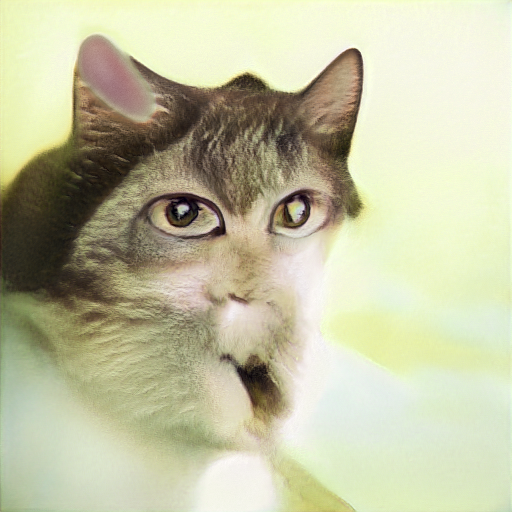
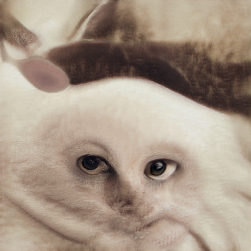
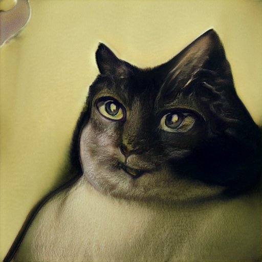
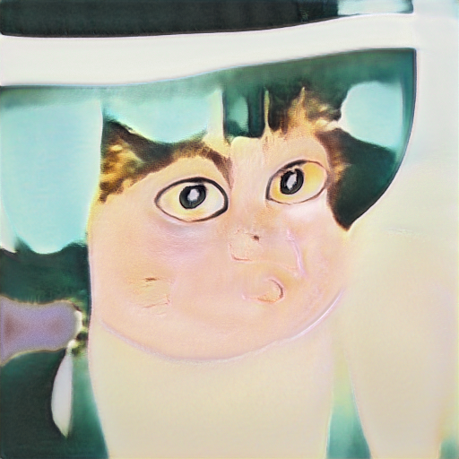
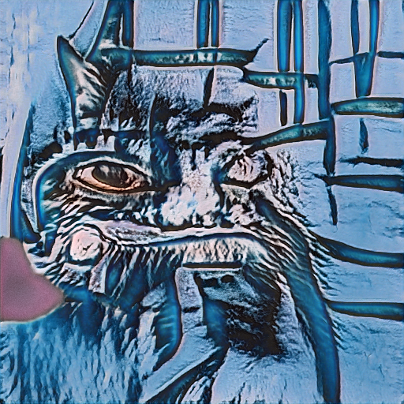
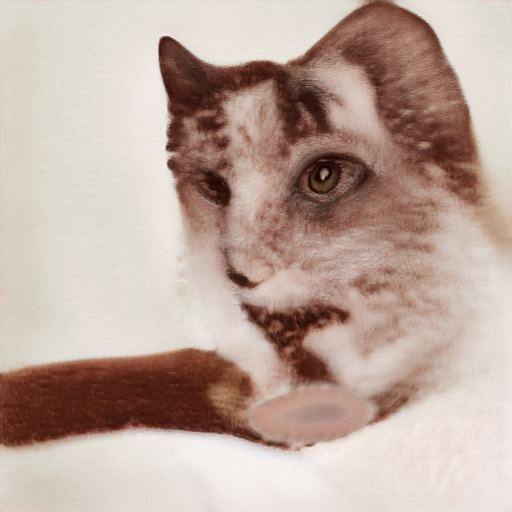
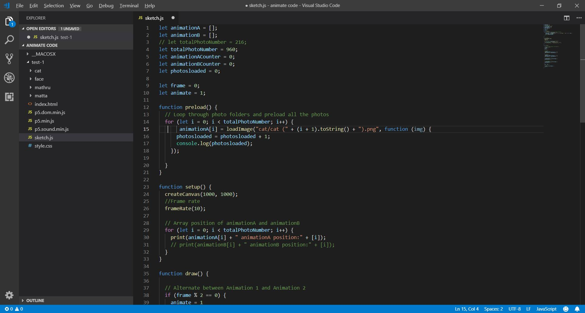

Cats
Showcase
Cycling '74 Expo 2019 @Mass Moca
IDM Show 2019
ITP/IMA Spring Show 2019
Tools
StyleGAN, Max/MSP, Projection, Myo, Serge Synthesizor
Role
Developer, Performer
Brief
"Cats" is a generative art piece and performance that explores the relationship between AI synthesized digital contents and human beings. It is trained on a generative adversarial network (GAN) called StyleGAN to synthesize semi-human, semi-cat portraits, and uses them to generate a piece of "cat" music modeled after Beethoven's Sonata No. 8. It was performed at the Cycling '74 Expo on April, 2019, the IDM Show 2019 at NYU MAGNET, and the ITP Spring Show 2019.
Concept & Building Process
This piece is inspired by R. Luke Dubois's Pop Icon: Bowie piece, and the recent advancement in high-resolution AI image synthesis. While AI is now capable of producing images that look exactly like photos taken using a camera, it does not rely on any physicality of the subject of those imageries. In this case, what's the point of doing so? And what does it imply? In search of answers to this question, I found that it could be used as a platform to explore our "hive mind" perception of concepts, ideas, and bias, and to present them in realistically convincing or utterly surreal ways.
In this piece, I chose the combination of human portrait arts and real-life cat photos - two categories that wouldn't normally come across each other - as my subject of synthesis. 5000+ images of human portraits were trained on StyleGAN, with an additional layer of 2000+ cat faces. Below are some samples of the generated cat portraits:






With the batch of synthesized images, a p5.js sketck was created to animate the images with a customized framerate, and turned them into a video.
Once the synthezied video was compiled, it was fed into a streamline of vocoders in Max/MSP to generate different "meow" sounds, which were eventually transformed into the notes of Beethoven's Sonata No. 8.
Cycling '74 Expo 2019 Performance